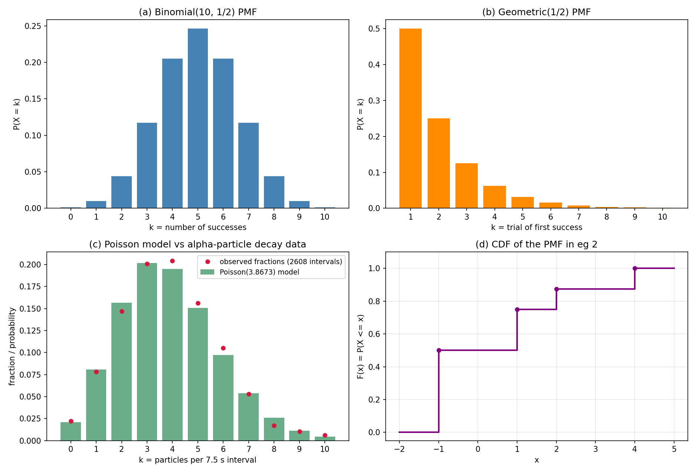

15. Discrete random variables and key distributions
Chapter 14 ended with a deliberate cliffhanger: §14.13 set up \(n\) repeated independent trials — \(2^n\) sequences, each sequence’s probability a product of its trials — and then said the general counting and the names of the resulting distributions are this chapter’s job. The setup was complete; the language was missing. That language is the random variable.
The motivation comes from the same place as before. The Stats 2 lectures open with IPL cricket — ball-by-ball data, runs per over, wickets per innings. An outcome of “one powerplay over” is a huge, messy object (six deliveries, wides, no-balls, runs, wickets). But what you actually want to study is usually a number computed from that outcome: how many runs? how many wickets? Those numbers are random variables, and this chapter builds their entire toolkit: what they are, how probabilities attach to them (the PMF and CDF), how to average them (expectation) and measure their spread (variance), and the seven named discrete distributions that model almost every “repeated experiment” you will ever meet.
15.1 Random variables: functions on the sample space
Def. A random variable = a function whose domain is the sample space \(S\) of an experiment and whose range is the real numbers — a function from the sample space to the real line.
Not “random” (it is a fixed function) and not quite a “variable” (it is a mapping). The name is historical; the object is precise.
- Toss a coin, \(S = \{H, T\}\). \(X(H) = 0\), \(X(T) = 1\) is a random variable. So is \(Y(H) = -10\), \(Y(T) = 200\). So is \(Z(H) = \sqrt{2}\), \(Z(T) = \pi\). So is \(U(H) = 0\), \(U(T) = 0\). All valid — though in practice, meaningful functions are the ones studied.
- Throw a die, \(S = \{1, 2, 3, 4, 5, 6\}\). Pick any six real numbers \(x_1, \dots, x_6\) and set \(X(i) = x_i\): a random variable. If the \(x_i\) are distinct, \(X\) is one-to-one — essentially a relabeling of the sample space. They need not be distinct: \(E(2) = E(4) = E(6) = 1\), \(E(1) = E(3) = E(5) = 0\) is a perfectly good random variable (“even indicator”).
Random variables turn questions about outcomes into questions about numbers. For a random variable \(X\):
- \((X < x) = \{s \in S : X(s) < x\}\) is an event, for every real \(x\). Likewise \((X > x)\), \((X = x)\), \((X \le x)\), \((X \ge x)\) are all events.
- This is the “technical condition” the lectures mention: a function counts as a random variable only if every such set is genuinely an event (for finite and countable \(S\), where every subset is an event, it is automatic).
- Not every event can be expressed through every random variable. With the even-indicator \(E\) above: \((E = 0) = \{1, 3, 5\}\), \((E = 1) = \{2, 4, 6\}\) — but the event \(\{2\}\) cannot be written using \(E\) alone. A coarser random variable sees less.
Why random variables at all? One IPL powerplay over supports many: number of runs, number of actual deliveries, number of wickets, number of boundaries, number of dot balls. Instead of assigning probabilities to the entire messy outcome, assign probabilities to events defined through these random variables. It reduces the detail to something simpler — and with limited data, only such summaries can be studied at all.
Basically, … A random variable is a “measurement function”: feed it the outcome of the experiment, it returns a number. Probability then becomes a question about that number — “what are the chances the measurement comes out below \(4\)?” — instead of a question about the whole outcome.
15.2 Range of a random variable
Def. The range of a random variable = the set of values it takes. The range is a subset of the real line.
- Throw a die, \(X\) = number shown: range \(\{1, 2, 3, 4, 5, 6\}\).
- The even-indicator \(E\): range \(\{0, 1\}\).
- IPL powerplay over: number of actual deliveries — range \(6, 7, 8, 9, \dots\) (wides and no-balls add deliveries); number of runs — \(0, 1, 2, 3, \dots\); number of wickets — \(0, 1, \dots, 10\); number of boundaries — \(0, 1, 2, \dots\); number of dot balls — \(0, 1, \dots, 6\).
The range is where the probability story will live: instead of tracking which outcome occurred, track which value the random variable took.
15.3 Discrete random variables
Def. A random variable is discrete if its range is a discrete set.
Which sets are discrete?
- Every finite subset of the real line is discrete.
- The integers are discrete.
- Integer multiples of any real number are discrete (e.g. \(\{0, 0.5, 1, 1.5, \dots\}\)).
- Any subset of a discrete set is discrete.
Which are not? Any interval \((a, b)\) with \(a < b\) is not discrete — and any set containing a non-discrete set is not discrete.
Every random variable in §§15.1–15.2 is discrete: die faces, coin indicators, IPL counts. The non-discrete case — exact rainfall, exact dart position — waits for Chapter 16.
Basically, … “Discrete” means the possible values can be listed (perhaps an infinite list): \(0, 1, 2, \dots\). If the values fill a continuum — every real number between \(0\) and \(1\) — it is not discrete, and a different toolkit is needed.
15.4 The PMF: probability mass function
If \(X\) is discrete, \((X = t)\) is an event for each value \(t\) in its range \(T\). Define \[P(X = t) = P(\text{all outcomes that make } X \text{ take the value } t).\] For a set \(B\) of values, \((X \in B)\) is an event with \[P(X \in B) = \sum_{t \in B} P(X = t).\]
Def. The probability mass function (PMF) of a discrete random variable \(X\) with range \(T\) = the function \(f_X : T \to [0, 1]\) defined by \[f_X(t) = P(X = t) \quad \text{for } t \in T.\]
Two properties every PMF satisfies (they are just the axioms, §14.6, wearing new clothes):
- \(0 \le f_X(t) \le 1\) for all \(t\) — each value is a probability.
- \(\sum_{t \in T} f_X(t) = 1\) — the values \((X = t)\) are disjoint events whose union is “\(X\) takes some value in \(T\)”, i.e. the whole sample space.
Note: From here on, random variables and their PMFs are usually studied without much mention of the experiment or sample space. Events are defined using random variables, and probabilities are evaluated using the PMF. The sample space did its job — it is now scaffolding you can stop looking at.
eg 1 (3-digit lottery). A three-digit number is drawn uniformly from \(000\) to \(999\) (\(1000\) equally likely outcomes). A ticket matching exactly wins Rs. \(2\) lakhs; matching exactly two of the three digits wins Rs. \(20000\); otherwise nothing. Let \(X\) = the ticket’s value. The PMF:
- \(P(X = 200000) = 1/1000 = 0.001\) — one winning number.
- \(P(X = 20000)\): choose which two digits match — \(\binom{3}{2} = 3\) choices — and the third digit must differ from the drawn one — \(9\) choices. \(27\) outcomes. \(P = 27/1000 = 0.027\).
- \(P(X = 0) = 1 - 0.001 - 0.027 = 0.972\).
So \(f_X(0) = 0.972\), \(f_X(20000) = 0.027\), \(f_X(200000) = 0.001\); range \(\{0, 20000, 200000\}\). Check: the three values are disjoint and sum to \(1\). ✓
eg 2 (working with a PMF). A random variable \(X\) has PMF given partially:
| \(t\) | \(-1\) | \(1\) | \(2\) | \(4\) |
|---|---|---|---|---|
| \(f_X(t)\) | \(0.5\) | \(0.25\) | \(0.125\) | \(?\) |
- \(f_X(4) = 1 - (0.5 + 0.25 + 0.125) = \boxed{0.125}\) — the PMF must sum to \(1\).
- Range of \(X\): \(\{-1, 1, 2, 4\}\).
- \(P(X > 3) = f_X(4) = \boxed{0.125}\) — only \(4\) exceeds \(3\).
- \(P(X < 3/2) = f_X(-1) + f_X(1) = 0.5 + 0.25 = \boxed{0.75}\).
eg 3 (finding the constant). \(f_X(k) = c/3^k\) for \(k = 1, 2, 3, \dots\). Find \(c\); find \(P(X > 10)\) and \(P(X > 10 \mid X > 5)\).
- The probabilities must sum to \(1\): \[1 = \sum_{k=1}^{\infty} \frac{c}{3^k} = c \cdot \frac{1/3}{1 - 1/3} = c \cdot \frac{1}{2}, \quad \text{so } \boxed{c = 2}.\]
- \(P(X > 10) = \sum_{k=11}^{\infty} 2/3^k = \dfrac{2/3^{11}}{1 - 1/3} = \dfrac{2}{3^{11}} \cdot \dfrac{3}{2} = \boxed{(1/3)^{10}}\).
- By the same tail computation, \(P(X > 5) = (1/3)^5\). Then \[P(X > 10 \mid X > 5) = \frac{P(X > 10)}{P(X > 5)} = \frac{(1/3)^{10}}{(1/3)^5} = \boxed{(1/3)^5}.\]
Note: (iii) says \(P(X > 10 \mid X > 5) = P(X > 5)\) — surviving \(5\) more rounds after surviving \(5\) is exactly as likely as surviving \(5\) fresh. The past is forgotten. This is the memoryless property in action; §15.13 proves it in general.
15.5 The CDF for discrete random variables
Def. The cumulative distribution function (CDF) of \(X\) = \[F_X(x) = P(X \le x) = \sum_{t \le x} f_X(t), \qquad x \in \mathbb{R}.\]
The PMF answers “exactly \(t\)”; the CDF answers “at most \(x\)”. For discrete \(X\), \(F_X\) is a step function:
- \(0 \le F_X(x) \le 1\), non-decreasing; \(F_X(x) \to 0\) as \(x \to -\infty\), \(F_X(x) \to 1\) as \(x \to +\infty\).
- At each range value \(t\), \(F_X\) jumps by exactly \(f_X(t)\); between range values it is flat.
- Interval probabilities come from differences: \(P(a < X \le b) = F_X(b) - F_X(a)\).
eg 4 (CDF of eg 2’s PMF). With \(f_X(-1) = 0.5\), \(f_X(1) = 0.25\), \(f_X(2) = 0.125\), \(f_X(4) = 0.125\): \[F_X(x) = \begin{cases} 0 & x < -1,\\ 0.5 & -1 \le x < 1,\\ 0.75 & 1 \le x < 2,\\ 0.875 & 2 \le x < 4,\\ 1 & x \ge 4. \end{cases}\] (Panel (d) of the figure draws this staircase.) Then \(P(1 < X \le 4) = F_X(4) - F_X(1) = 1 - 0.75 = 0.25\) — and indeed \(f_X(2) + f_X(4) = 0.125 + 0.125 = 0.25\). ✓
Basically, … The PMF is the full story (“how much mass sits at each point”); the CDF is the running total (“how much mass has piled up so far”). Anything you can ask with one, you can answer with the other.
15.6 Functions of a random variable
If \(X\) is a random variable with range \(T\) and PMF \(f_X\), and \(f\) is any function \(\mathbb{R} \to \mathbb{R}\), then \(f(X)\) — apply \(f\) to the value \(X\) takes — is a composition of two functions, hence another random variable on the same probability space.
Its PMF comes straight from \(X\)’s: \[\boxed{f_{f(X)}(a) = P(f(X) = a) = P\!\left(X \in \{t : f(t) = a\}\right) = \sum_{t:\, f(t) = a} f_X(t).}\] Group together all \(t\) that \(f\) maps to the same value \(a\), and add their probabilities.
eg 5. \(X \sim \text{Uniform}(\{-2, -1, 0, 1, 2\})\) (each value with probability \(1/5\)), and \(Y = X^2\). Then \(Y\)’s range is \(\{0, 1, 4\}\): - \(f_Y(0) = P(X = 0) = 1/5\), - \(f_Y(1) = P(X \in \{-1, 1\}) = 2/5\), - \(f_Y(4) = P(X \in \{-2, 2\}) = 2/5\).
Sum: \(1\). ✓ Note \(Y\) is not uniform — squaring folds the values together.
eg 6. \(X \sim \text{Geometric}(1/2)\) (trials until the first head; §15.13), and \(Y = \min(X, 5)\) — “cap the wait at \(5\)”. Then: - for \(k = 1, 2, 3, 4\): \(P(Y = k) = P(X = k) = (1/2)^k\), - \(P(Y = 5) = P(X \ge 5) = (1/2)^4 = 1/16\) — everything from \(5\) on piles up at the cap.
Check: \(\tfrac{1}{2} + \tfrac{1}{4} + \tfrac{1}{8} + \tfrac{1}{16} + \tfrac{1}{16} = 1\). ✓
Basically, … \(f(X)\) inherits its probabilities from \(X\): every value of \(X\) that \(f\) sends to the same place pools its probability there. This is the engine behind §15.7’s averages — \(E[X^2]\) is just the expectation of the function \(f(X) = X^2\).
15.7 Expectation
The lectures’ IPL framing started with averages: mean runs per powerplay over climbing from \(6.00\) to \(8.30\). The expectation is the theoretical version of that average — the “center of mass” of the PMF.
Def. The expectation (expected value, mean) of a discrete random variable \(X\) = \[\boxed{E[X] = \sum_{t \in T} t \cdot f_X(t).}\]
Note (convergence): for an infinite range, this sum must converge absolutely (\(\sum |t| f_X(t) < \infty\)); otherwise \(E[X]\) is undefined. Every distribution in this chapter has a well-defined mean.
Two consequences of §15.6 used constantly:
- Functions: \(E[f(X)] = \sum_{t \in T} f(t)\, f_X(t)\) — average the transformed values with the original probabilities (no need to find \(f(X)\)’s PMF first).
- In particular \(E[X^2] = \sum t^2 f_X(t)\) — needed for variance (§15.9).
eg 7 (lottery, continued). From eg 1: \(f_X(0) = 0.972\), \(f_X(20000) = 0.027\), \(f_X(200000) = 0.001\). \[E[X] = 0(0.972) + 20000(0.027) + 200000(0.001) = 540 + 200 = \boxed{\text{Rs. } 740}.\] Interpretation: over many, many tickets, the average payout per ticket settles at Rs. \(740\). Note: no ticket ever pays Rs. \(740\) — the expectation is an average, not a possible outcome. Confusing the two is the single most common expectation mistake.
Basically, … Expectation = probability-weighted average. Multiply each possible value by how likely it is, add up. It is the one number that summarizes “where” the distribution sits.
15.8 Linearity of expectation
Theorem (linearity). For constants \(a, b\) and any random variables \(X, Y\) (no independence needed): \[\boxed{E[aX + b] = a\,E[X] + b, \qquad E[X + Y] = E[X] + E[Y].}\]
Proof. For the affine case: \[E[aX + b] = \sum_t (at + b)\, f_X(t) = a \sum_t t\, f_X(t) + b \sum_t f_X(t) = a\,E[X] + b,\] since \(\sum_t f_X(t) = 1\). The sum rule follows by the same idea applied to the joint PMF of \((X, Y)\) (joint distributions are Chapter 17’s subject): \(E[X + Y] = \sum_{t,s} (t + s)\, f_{X,Y}(t, s) = \sum_t t\, f_X(t) + \sum_s s\, f_Y(s)\). ∎
This is the workhorse theorem of the chapter. It turns hard sums into easy ones: the expectation of a count is the sum of the expectations of its indicators — used for the binomial (§15.12), negative binomial (§15.14), and hypergeometric (§15.16) means.
eg 8 (linearity, checked both ways). With eg 2’s PMF, \(E[X] = (-1)(0.5) + (1)(0.25) + (2)(0.125) + (4)(0.125) = -0.5 + 0.25 + 0.25 + 0.5 = 0.5\). By linearity, \(E[2X + 1] = 2(0.5) + 1 = \boxed{2}\). Direct check: \(2X+1\) takes values \(-1, 3, 5, 9\) with the same probabilities, and \((-1)(0.5) + 3(0.25) + 5(0.125) + 9(0.125) = -0.5 + 0.75 + 0.625 + 1.125 = 2.0\). ✓
Basically, … Averages add: the average of a sum is the sum of the averages — always, even when the parts depend on each other. Whenever you see “expected number of …”, try writing the count as a sum of \(0\)/\(1\) indicators first.
15.9 Variance and standard deviation
Expectation says where the distribution sits; variance says how spread out it is. The IPL framing had both: average runs per over and their standard deviations (\(\approx 4\)).
Def. The variance of \(X\) = \[\boxed{\mathrm{Var}(X) = E\big[(X - E[X])^2\big]},\] the expected squared distance from the mean. The standard deviation \(\sigma = \sqrt{\mathrm{Var}(X)}\) restores the original units.
Theorem. \(\boxed{\mathrm{Var}(X) = E[X^2] - (E[X])^2.}\)
Proof. Write \(\mu = E[X]\) and expand, using linearity (§15.8): \[\mathrm{Var}(X) = E[(X - \mu)^2] = E[X^2 - 2\mu X + \mu^2] = E[X^2] - 2\mu\,E[X] + \mu^2 = E[X^2] - \mu^2. \quad ∎\]
Corollary. \(\mathrm{Var}(aX + b) = a^2\,\mathrm{Var}(X)\): shifting by \(b\) does not change the spread; scaling by \(a\) scales squared distances by \(a^2\). (Proof: \(E[(aX + b) - (a\mu + b)]^2 = E[a^2(X-\mu)^2] = a^2\,\mathrm{Var}(X)\).)
eg 9. With eg 2’s PMF, \(E[X] = 0.5\) (eg 8). Then \[E[X^2] = (1)(0.5) + (1)(0.25) + (4)(0.125) + (16)(0.125) = 0.5 + 0.25 + 0.5 + 2 = 3.25,\] \[\mathrm{Var}(X) = 3.25 - (0.5)^2 = \boxed{3.0}, \qquad \sigma = \sqrt{3} \approx \boxed{1.73}.\]
Basically, … Variance = “average of the squares minus the square of the average”. The squaring penalizes far-from-mean values, so variance measures spread, not location. Standard deviation is the same idea in the original units (runs, not runs-squared).
15.10 The uniform distribution
Def. \(X \sim \mathrm{Uniform}(T)\), \(T\) a finite set: range \(T\), PMF \[f_X(t) = \frac{1}{|T|} \quad \text{for all } t \in T.\]
This is the “equally likely outcomes” model from §14.8, now as a named distribution: fair coin \(\sim \mathrm{Uniform}(\{0, 1\})\), fair die \(\sim \mathrm{Uniform}(\{1, 2, 3, 4, 5, 6\})\).
For the standard case \(T = \{1, 2, \dots, n\}\): \[E[X] = \frac{1}{n}\sum_{k=1}^{n} k = \frac{n+1}{2}, \qquad E[X^2] = \frac{1}{n}\sum_{k=1}^{n} k^2 = \frac{(n+1)(2n+1)}{6},\] \[\mathrm{Var}(X) = \frac{(n+1)(2n+1)}{6} - \frac{(n+1)^2}{4} = \frac{n^2 - 1}{12}.\]
eg 10 (fair die). \(E[X] = 7/2 = 3.5\); \(\mathrm{Var}(X) = 35/12 \approx 2.92\), \(\sigma \approx 1.71\). Sanity check via the definition: \(E[(X - 3.5)^2] = \tfrac{1}{6}\big(2(2.5^2) + 2(1.5^2) + 2(0.5^2)\big) = \tfrac{1}{6}(12.5 + 4.5 + 0.5) = 17.5/6 = 35/12\). ✓

15.11 The Bernoulli distribution
Def. \(X \sim \mathrm{Bernoulli}(p)\), \(0 \le p \le 1\): range \(\{0, 1\}\), \[f_X(0) = 1 - p, \qquad f_X(1) = p.\]
The model of a single success/failure trial: \(X = 1\) = “success” with probability \(p\). It is the atom everything else in this chapter is built from — and \(\mathrm{Binomial}(1, p) = \mathrm{Bernoulli}(p)\) (§15.12).
\[E[X] = 0\cdot(1-p) + 1\cdot p = p, \qquad \mathrm{Var}(X) = E[X^2] - (E[X])^2 = p - p^2 = p(1-p)\] (using \(X^2 = X\) for a \(0\)/\(1\) variable — the oldest trick in the chapter).
Basically, … Bernoulli = one yes/no question. Its mean is \(p\) (the chance of “yes”), and its variance \(p(1-p)\) is largest at \(p = 1/2\) — maximum uncertainty when the question is a coin flip.
15.12 The binomial distribution
Def. \(X \sim \mathrm{Binomial}(n, p)\), \(n\) a positive integer, \(0 \le p \le 1\): range \(\{0, 1, \dots, n\}\), \[\boxed{f_X(k) = \binom{n}{k} p^k (1-p)^{\,n-k}.}\]
The story: number of successes in \(n\) independent \(\mathrm{Bernoulli}(p)\) trials. This is exactly the counting argument §14.13 promised:
- One specific sequence with \(k\) successes has probability \(p^k (1-p)^{n-k}\) — multiply by independence (§14.13: only the count of \(1\)s matters, not their positions).
- How many such sequences are there? Choose the \(k\) success positions among \(n\): \(\binom{n}{k}\).
- The \(\binom{n}{k}\) sequences are disjoint, so add (Axiom 3, §14.6): \(\binom{n}{k} p^k (1-p)^{n-k}\).
The PMF is valid: \(\sum_{k=0}^{n} \binom{n}{k} p^k (1-p)^{n-k} = (p + (1-p))^n = 1\) by the binomial theorem.
Mean and variance — the indicator trick. Write \(X = X_1 + \cdots + X_n\) where \(X_i\) is \(1\) if trial \(i\) succeeds, else \(0\); each \(X_i \sim \mathrm{Bernoulli}(p)\). By linearity (§15.8): \[E[X] = \sum_{i=1}^{n} E[X_i] = \boxed{np}.\] For the variance, \(E[X^2] = \sum_i E[X_i^2] + \sum_{i \ne j} E[X_i X_j]\). Now \(X_i^2 = X_i\) so \(E[X_i^2] = p\); and for \(i \ne j\), independence (§14.12) gives \(E[X_i X_j] = E[X_i]\,E[X_j] = p^2\). Hence \(E[X^2] = np + n(n-1)p^2\), and \[\mathrm{Var}(X) = np + n(n-1)p^2 - n^2p^2 = \boxed{np(1-p)}.\]
eg 11 (3 fair tosses — the deck’s question). “How many heads will appear?” \(X \sim \mathrm{Binomial}(3, 1/2)\): \[f_X(0) = \tfrac{1}{8},\; f_X(1) = \tfrac{3}{8},\; f_X(2) = \tfrac{3}{8},\; f_X(3) = \tfrac{1}{8}.\] E.g. \(P(\text{exactly } 2 \text{ heads}) = \binom{3}{2}(1/2)^3 = \boxed{3/8}\) — the three sequences \(HHT, HTH, THH\).
Basically, … Binomial = “how many yeses in \(n\) independent tries”. Every sequence with \(k\) yeses is equally likely; count the sequences with \(\binom{n}{k}\). The mean \(np\) is just “\(n\) tries times \(p\) chance each” — linearity doing the counting for you.
15.13 The geometric distribution
Def. \(X \sim \mathrm{Geometric}(p)\), \(0 < p \le 1\): range \(\{1, 2, 3, \dots\}\), \[\boxed{f_X(k) = (1-p)^{\,k-1} p.}\]
The story: number of trials until the first success in repeated independent \(\mathrm{Bernoulli}(p)\) trials. For \(X = k\): \(k-1\) failures then a success — multiply by independence. The PMF is valid: \(p\sum_{k=1}^{\infty}(1-p)^{k-1} = p \cdot \frac{1}{1-(1-p)} = 1\) (geometric series — the distribution’s namesake).
Mean and variance. Using \(\sum_{k=1}^{\infty} k x^{k-1} = 1/(1-x)^2\) for \(|x| < 1\): \[E[X] = \sum_{k=1}^{\infty} k(1-p)^{k-1}p = \frac{p}{(1-(1-p))^2} = \boxed{\frac{1}{p}}.\] For the variance, the \(E[X(X-1)]\) trick avoids differentiating twice: \(\sum_{k=1}^{\infty} k(k-1) x^{k-2} = 2/(1-x)^3\), so \[E[X(X-1)] = p(1-p)\cdot\frac{2}{(1-(1-p))^3} = \frac{2(1-p)}{p^2}.\] Then \(E[X^2] = E[X(X-1)] + E[X] = \frac{2(1-p)}{p^2} + \frac{1}{p} = \frac{2-p}{p^2}\), and \[\mathrm{Var}(X) = \frac{2-p}{p^2} - \frac{1}{p^2} = \boxed{\frac{1-p}{p^2}}.\]
Note (the other convention). Some sources count failures before the first success: range \(\{0, 1, 2, \dots\}\), \(f_X(k) = (1-p)^k p\). Same distribution shifted by \(1\) (mean \((1-p)/p\), same variance). This chapter uses the trials-until-success convention unless stated.
Note (memorylessness). The geometric forgets past failures: for \(m, n \ge 0\), \[P(X > m + n \mid X > m) = \frac{P(X > m+n)}{P(X > m)} = \frac{(1-p)^{m+n}}{(1-p)^m} = (1-p)^n = P(X > n).\] (\(P(X > k) = \sum_{j=k+1}^{\infty}(1-p)^{j-1}p = (1-p)^k\).) Knowing you already failed \(m\) times tells you nothing about the next \(n\) — eg 3’s \(P(X > 10 \mid X > 5) = (1/3)^5 = P(X > 5)\) was exactly this. The geometric is the only discrete distribution with this property.
eg 12. Fair coin; \(X\) = toss of the first head, \(X \sim \mathrm{Geometric}(1/2)\). \(P(X = 5) = (1/2)^4(1/2) = \boxed{1/32}\) — four tails, then a head. \(E[X] = 2\) tosses on average; \(\mathrm{Var}(X) = (1/2)/(1/4) = 2\).
Also the deck’s second question — “which is the first flip (if any) that shows heads?” in 3 tosses: \(P(X = k) = (1/2)^k\) for \(k = 1, 2, 3\), and \(P(\text{no heads}) = (1/2)^3 = 1/8\). A geometric cut off at \(3\).
Basically, … Geometric = “how long until the first yes”. The PMF is a “ski slope” (panel (b) of the figure): each extra failure multiplies the probability by \((1-p)\). And it has no memory — a coin that failed \(10\) times is not “due”.
15.14 The negative binomial distribution
Def. \(X \sim \mathrm{NegativeBinomial}(r, p)\), \(r\) a positive integer, \(0 < p \le 1\): range \(\{r, r+1, r+2, \dots\}\), \[\boxed{f_X(k) = \binom{k-1}{r-1} (1-p)^{\,k-r} p^{\,r}.}\]
The story: number of trials until the \(r\)-th success. The counting argument: for \(X = k\), the \(k\)-th trial must be a success, and among the first \(k-1\) trials exactly \(r-1\) are successes — \(\binom{k-1}{r-1}\) ways, each with probability \(p^{r-1}(1-p)^{k-r}\) — times \(p\) for the final success. With \(r = 1\) this collapses to the geometric: \(\mathrm{NegativeBinomial}(1, p) = \mathrm{Geometric}(p)\).
Mean and variance — via geometrics. The wait for \(r\) successes is the sum of \(r\) independent geometric waits (wait for the 1st, then the 2nd, \(\dots\)). By linearity (§15.8) and independence (§14.12): \[E[X] = r\cdot\frac{1}{p} = \boxed{\frac{r}{p}}, \qquad \mathrm{Var}(X) = r\cdot\frac{1-p}{p^2} = \boxed{\frac{r(1-p)}{p^2}}.\]
eg 13. \(p = 1/2\); \(X\) = trials until the \(3\)rd head. \(P(X = 5) = \binom{4}{2}(1/2)^{2}(1/2)^{3} = 6/32 = \boxed{3/16}\) — two heads among the first four tosses (\(\binom{4}{2}\) ways), then a head.
15.15 The Poisson distribution
Def. \(X \sim \mathrm{Poisson}(\lambda)\), \(\lambda > 0\): range \(\{0, 1, 2, \dots\}\), \[\boxed{f_X(k) = \frac{e^{-\lambda}\,\lambda^k}{k!}.}\]
The story (from the source deck): events occurring over time — arrivals at a queue, website visitors, radioactive emissions, meteorites entering the atmosphere. What these share: the arrival rate can be assumed constant, and given one arrival, the time until the next is independent of the past. Under those assumptions, the number of arrivals in a fixed period is Poisson. The PMF is valid: \(\sum_{k=0}^{\infty} \lambda^k/k! = e^{\lambda}\).
Mean and variance. \(E[X(X-1)] = \sum_{k=0}^{\infty} k(k-1)\,e^{-\lambda}\lambda^k/k! = \lambda^2\sum_{j=0}^{\infty} e^{-\lambda}\lambda^j/j! = \lambda^2\) (with \(j = k-2\)). Similarly, \(E[X] = \sum k\,e^{-\lambda}\lambda^k/k! = \lambda\sum e^{-\lambda}\lambda^{k-1}/(k-1)! = \lambda\). So \[\boxed{E[X] = \lambda, \qquad \mathrm{Var}(X) = \lambda^2 + \lambda - \lambda^2 = \lambda.}\] Mean equals variance — the Poisson’s signature.
Note (Poisson as the limit of the binomial). Take \(\mathrm{Binomial}(n, p)\) with \(n \to \infty\), \(p \to 0\) holding \(np = \lambda\) fixed (many trials, rare successes). Then \[\binom{n}{k}\left(\tfrac{\lambda}{n}\right)^k\left(1-\tfrac{\lambda}{n}\right)^{n-k} = \underbrace{\tfrac{n(n-1)\cdots(n-k+1)}{n^k}}_{\to\, 1}\cdot \tfrac{\lambda^k}{k!}\cdot \underbrace{\tfrac{(1-\lambda/n)^n}{(1-\lambda/n)^k}}_{\to\, e^{-\lambda}} \longrightarrow \frac{e^{-\lambda}\lambda^k}{k!}.\] This is why Poisson models “rare events”: it is the binomial pushed to the rare-event limit. (The same limit is stated on distribution-explorer’s Binomial page — the named cross-check resource for this chapter; the site’s PMF/mean/variance tables were used to verify every distribution in §§15.10–15.16.)
eg 14 (radioactive decay — the deck’s data). In \(2608\) intervals of \(7.5\) seconds, alpha-particle counts were recorded; the average rate \(\lambda = \text{(total particles)}/2608 = 3.8673\). Then \[P(X = 3) = \frac{e^{-3.8673}\,3.8673^3}{3!} \approx \boxed{0.2016},\] against the observed fraction \(0.201\). Panel (c) of the figure plots model vs observed fractions for \(k = 0, \dots, 10\) — they track each other closely: the Poisson model fits.
eg 15 (fireballs). Over \(276\) months, meteorite (“fireball”) counts average \(\lambda = 2.5217\) per month. \(P(X = 0) = e^{-2.5217} \approx \boxed{0.0803}\) — a month with no fireballs happens about \(8\%\) of the time; the observed fraction was \(0.087\).
Basically, … Poisson = “how many events in a fixed window, when events drip in at a steady rate independently of each other”. One parameter \(\lambda\) does everything: it is the mean, the variance, and (estimated from data) the observed average rate.
15.16 The hypergeometric distribution
Def. \(X \sim \mathrm{Hypergeometric}(N, r, m)\), \(N, r, m\) positive integers: a population of \(N\) items holds \(r\) of Type 1 and \(N - r\) of Type 2; draw \(m\) items uniformly at random without replacement; \(X\) = number of Type-1 items drawn. Range: \(\max(0, m-(N-r)), \dots, \min(r, m)\), \[\boxed{f_X(k) = \frac{\binom{r}{k}\binom{N-r}{m-k}}{\binom{N}{m}}.}\]
The counting argument: choose the \(k\) Type-1 items (\(\binom{r}{k}\) ways), choose the \(m-k\) Type-2 items (\(\binom{N-r}{m-k}\) ways), divide by all \(\binom{N}{m}\) equally likely draws. The deck’s range examples: \(N = 100\), \(r = 50\), \(m = 20 \Rightarrow X \in \{0, \dots, 20\}\); \(N = 100\), \(r = 10\), \(m = 20 \Rightarrow X \in \{0, \dots, 10\}\) (can’t draw more Type-1 than exist); \(N = 100\), \(r = 90\), \(m = 20 \Rightarrow X \in \{10, \dots, 20\}\) (at least \(10\) must be Type-1).
Mean and variance. Write \(X = X_1 + \cdots + X_m\) with \(X_j\) the indicator that draw \(j\) is Type 1. Each draw is equally likely to be any of the \(N\) items, so \(E[X_j] = r/N\), and by linearity \[E[X] = \boxed{m\,\frac{r}{N}}.\] The draws are not independent (sampling without replacement — §14.9’s shrinking denominator), so the variance is not \(m\frac{r}{N}(1-\frac{r}{N})\); it carries a finite-population correction: \[\boxed{\mathrm{Var}(X) = m\,\frac{r}{N}\,\frac{N-r}{N}\,\frac{N-m}{\,N-1\,}}.\] When the population dwarfs the sample (\(N \gg m\)), \(\frac{N-m}{N-1} \approx 1\) and the hypergeometric is well approximated by \(\mathrm{Binomial}(m, r/N)\) — without replacement barely differs from with replacement.
eg 16. \(N = 100\) items, \(r = 50\) Type 1, draw \(m = 20\). \(E[X] = 20 \cdot \tfrac{1}{2} = 10\). \(P(X = 10) = \binom{50}{10}\binom{50}{10}/\binom{100}{20} \approx \boxed{0.1969}\). \(\mathrm{Var}(X) = 20\cdot\tfrac{1}{2}\cdot\tfrac{1}{2}\cdot\tfrac{80}{99} = 400/99 \approx 4.04\) (vs \(5\) without the correction).
Basically, … Hypergeometric = binomial’s “without replacement” sibling. Drawing \(20\) from \(100\) and counting Type-1s: the average is the same as with replacement (\(m \cdot r/N\)), but the spread shrinks — each draw “uses up” some randomness.
15.17 Why this matters: the language every later chapter speaks
- Expectation and variance are the ML vocabulary. Loss functions are expectations over data; “noise” is variance; the bias–variance tradeoff is a variance decomposition. Linearity of expectation is the single most-used proof move in randomized algorithms and ML theory.
- These distributions are the models. Bernoulli/Binomial sit behind every binary outcome (click/no-click, spam/ham — Chapter 30’s naive Bayes uses such likelihoods); the geometric behind waiting times; the Poisson behind count data and arrival processes; the hypergeometric behind sampling audits.
- The pattern continues. Chapter 16 lifts everything here to continuous random variables: PMF → PDF, sums → integrals, same expectation/variance definitions. Chapters 17–18 put two random variables together (joint PMFs — the object §15.8’s sum-rule proof already leaned on). Chapter 20’s estimation and Chapter 21’s central limit theorem (“averages of many iid variables concentrate at \(E[X]\)”) both start from this chapter’s definitions.
Part II, second shot. Events and axioms (§14) said what chance is. Random variables say what chance is about: numbers measured on experiments, with PMFs for their probabilities, expectations for their averages, variances for their spread. The next chapter keeps the same ideas and lets the values fill a continuum (Chapter 16).
Problem set
- (Random variables and ranges) Consider one IPL powerplay over. (a) Which of these are random variables: the number of wickets; the number of dot balls; “whether the over was exciting”? (b) Give the range of the number of wickets and of the number of dot balls.
- (PMF validity) \(f_X(k) = c/2^k\) for \(k = 1, 2, 3, \dots\). Find \(c\). Then find \(P(X \le 2)\).
- (Expectation and variance) \(X\) has PMF \(f_X(0) = 0.3\), \(f_X(1) = 0.5\), \(f_X(2) = 0.2\). Find \(E[X]\) and \(\mathrm{Var}(X)\).
- (CDF) For \(X\) as in Problem 3: (a) write \(F_X(x)\) piecewise; (b) find \(P(0 < X \le 2)\) using the CDF, and check against the PMF.
- (Linearity) \(X \sim \mathrm{Binomial}(100, 1/4)\). Find \(E[2X + 3]\).
- (Variance scaling) \(X \sim \mathrm{Geometric}(1/2)\). Find \(\mathrm{Var}(3X - 1)\).
- (Binomial) A biased coin with \(P(H) = 1/3\) is tossed \(5\) times. Find \(P(\text{exactly } 2 \text{ heads})\).
- (Memorylessness) \(X \sim \mathrm{Geometric}(0.3)\): a component’s lifetime in years. Given it has survived \(4\) years, find \(P(X > 10 \mid X > 4)\).
- (Negative binomial) Trials with \(p = 1/4\) are repeated until the \(3\)rd success. Find \(P(X = 6)\).
- (Poisson fit) For the alpha-decay data (\(\lambda = 3.8673\)): (a) compute \(P(X \le 1)\) under the Poisson model; (b) compare with the observed fraction of intervals with \(0\) or \(1\) particles (\(0.022 + 0.078 = 0.100\)).
- (Hypergeometric) \(N = 100\), \(r = 50\), \(m = 20\): find \(E[X]\) and \(\mathrm{Var}(X)\).
- (Functions of a random variable) \(X \sim \mathrm{Geometric}(1/2)\) and \(Y = \min(X, 3)\). Find the PMF of \(Y\) and \(E[Y]\).
Solutions
Attempt each problem first, then click a problem to reveal its worked solution.
1. (Random variables and ranges) (a) The number of wickets and the number of dot balls are random variables: each is a function from the over’s outcome (the ball-by-ball record) to a real number. “Whether the over was exciting” is not — it is not a numerical function of the outcome (no rule assigns it a real number).
- Number of wickets: \(\{0, 1, \dots, 10\}\) (at most ten wickets can fall). Number of dot balls: \(\{0, 1, \dots, 6\}\) (at most six legal deliveries in the over; wides/no-balls add deliveries but not dot balls).
2. (PMF validity) Sum to \(1\): \[1 = \sum_{k=1}^{\infty} \frac{c}{2^k} = c\cdot\frac{1/2}{1-1/2} = c,\] so \(\boxed{c = 1}\) — i.e. \(X \sim \mathrm{Geometric}(1/2)\) in the trials-until-success convention (§15.13). Then \(P(X \le 2) = f_X(1) + f_X(2) = \tfrac{1}{2} + \tfrac{1}{4} = \boxed{3/4}\).
3. (Expectation and variance) \[E[X] = 0(0.3) + 1(0.5) + 2(0.2) = 0.9.\] \[E[X^2] = 0^2(0.3) + 1^2(0.5) + 2^2(0.2) = 0.5 + 0.8 = 1.3.\] \[\mathrm{Var}(X) = E[X^2] - (E[X])^2 = 1.3 - 0.81 = \boxed{0.49}.\] So \(\boxed{E[X] = 0.9}\), \(\sigma = 0.7\).
4. (CDF) (a) The CDF jumps by \(f_X(t)\) at each range value: \[F_X(x) = \begin{cases} 0 & x < 0,\\ 0.3 & 0 \le x < 1,\\ 0.8 & 1 \le x < 2,\\ 1 & x \ge 2. \end{cases}\] (b) \(P(0 < X \le 2) = F_X(2) - F_X(0) = 1 - 0.3 = \boxed{0.7}\). Check via the PMF: \(f_X(1) + f_X(2) = 0.5 + 0.2 = 0.7\). ✓
5. (Linearity) \(E[X] = np = 100\cdot\tfrac{1}{4} = 25\) (§15.12). By linearity (§15.8): \(E[2X + 3] = 2E[X] + 3 = 2(25) + 3 = \boxed{53}\).
6. (Variance scaling) \(\mathrm{Var}(X) = (1-p)/p^2 = (1/2)/(1/4) = 2\) (§15.13). By the corollary in §15.9: \(\mathrm{Var}(3X - 1) = 3^2\cdot\mathrm{Var}(X) = 9\cdot 2 = \boxed{18}\).
7. (Binomial) \(X \sim \mathrm{Binomial}(5, 1/3)\): \[P(X = 2) = \binom{5}{2}\left(\tfrac{1}{3}\right)^2\left(\tfrac{2}{3}\right)^3 = 10\cdot\tfrac{1}{9}\cdot\tfrac{8}{27} = \frac{80}{243} \approx \boxed{0.3292}.\] (Ten sequences with exactly \(2\) heads, each with probability \((1/3)^2(2/3)^3\) — the §15.12 counting argument.)
8. (Memorylessness) \(P(X > k) = (1-p)^k = 0.7^k\). By memorylessness (§15.13): \[P(X > 10 \mid X > 4) = \frac{0.7^{10}}{0.7^4} = 0.7^6 = \boxed{0.117649}.\] The four survived years are forgotten — this equals \(P(X > 6)\), the fresh \(6\)-year survival probability.
9. (Negative binomial) \(X \sim \mathrm{NegativeBinomial}(3, 1/4)\): \[P(X = 6) = \binom{5}{2}\left(\tfrac{3}{4}\right)^{3}\left(\tfrac{1}{4}\right)^{3} = 10\cdot\tfrac{27}{64}\cdot\tfrac{1}{64} = \frac{270}{4096} = \boxed{\frac{135}{2048} \approx 0.0659}.\] (The \(6\)th trial is the \(3\)rd success; among the first \(5\) trials exactly \(2\) are successes: \(\binom{5}{2}\) ways.)
10. (Poisson fit) (a) \(P(X \le 1) = P(X = 0) + P(X = 1) = e^{-\lambda} + \lambda e^{-\lambda} = e^{-3.8673}(1 + 3.8673)\). With \(e^{-3.8673} \approx 0.02094\): \(P(X \le 1) \approx 0.02094 \times 4.8673 \approx \boxed{0.1018}\).
- The observed fraction is \(0.022 + 0.078 = 0.100\) — the model (\(0.1018\)) matches the data to within \(0.002\). The Poisson fit is good (see panel (c) of the figure).
11. (Hypergeometric) \(E[X] = m\cdot r/N = 20\cdot\tfrac{50}{100} = \boxed{10}\). \[\mathrm{Var}(X) = m\cdot\tfrac{r}{N}\cdot\tfrac{N-r}{N}\cdot\tfrac{N-m}{N-1} = 20\cdot\tfrac{1}{2}\cdot\tfrac{1}{2}\cdot\tfrac{80}{99} = \frac{400}{99} \approx \boxed{4.04}.\] (Without the finite-population correction \(\tfrac{80}{99}\), the variance would be \(5\).)
12. (Functions of a random variable) \(Y = \min(X, 3)\) caps \(X\) at \(3\): - \(P(Y = 1) = P(X = 1) = 1/2\), - \(P(Y = 2) = P(X = 2) = 1/4\), - \(P(Y = 3) = P(X \ge 3) = 1 - \tfrac{1}{2} - \tfrac{1}{4} = 1/4\).
Check: \(\tfrac{1}{2}+\tfrac{1}{4}+\tfrac{1}{4} = 1\). ✓ Then \[E[Y] = 1\cdot\tfrac{1}{2} + 2\cdot\tfrac{1}{4} + 3\cdot\tfrac{1}{4} = 0.5 + 0.5 + 0.75 = \boxed{1.75}.\] (Compare \(E[X] = 2\): capping the long tail lowers the mean, as it should.)